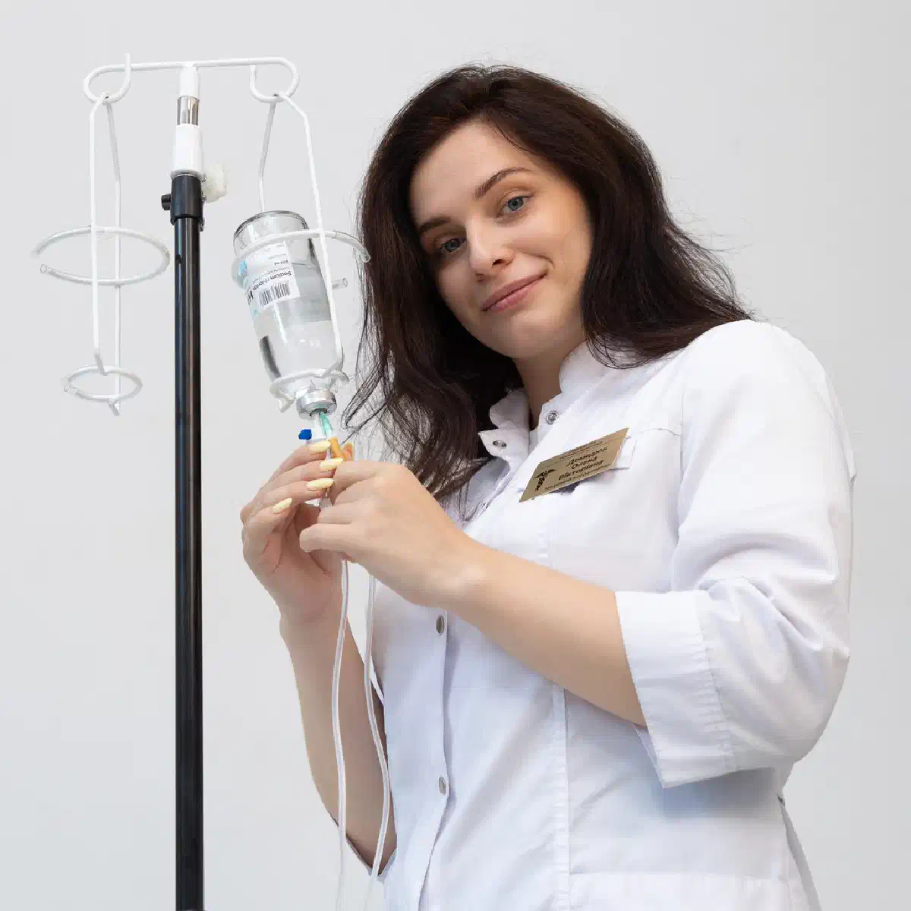
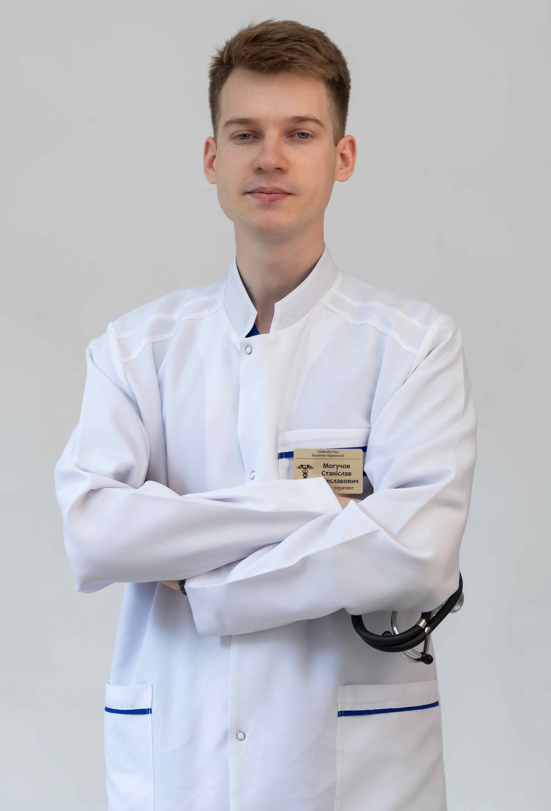

+38(068)
79 72 782
+38(068)
79 72 782Лечение синдрома отмены от наркотиков в Харькове
Конфиденциально, с возможностью обращения 24/7


Бесплатная консультация, работаем круглосуточно 24/7
Конфиденциально, с возможностью обращения 24/7

Дата написания: 12 окт. 2026 г.
Последнее обновление: 12 окт. 2026 г.
Лечение синдрома отмены от наркотиков в Харькове — это комплексная медицинская помощь пациентам, которые столкнулись с ухудшением физического и психологического состояния после прекращения или резкого сокращения употребления психоактивных веществ. Наркотическая абстиненция, также известная как ломка, может сопровождаться мышечными болями, тревогой, бессонницей, тошнотой, потливостью, нарушениями работы сердечно-сосудистой системы и выраженным желанием повторно употребить наркотик. Тяжесть состояния зависит от вида вещества, продолжительности зависимости и общего состояния здоровья. Помощь при наркотической ломке в Харькове начинается с консультации нарколога, оценки симптомов и определения безопасной тактики лечения. В зависимости от состояния пациента может быть рекомендован срочный вызов нарколога на дом, амбулаторное наблюдение или госпитализация. Основная задача лечения — уменьшить проявления абстиненции, предупредить осложнения и подготовить пациента к дальнейшей терапии наркотической зависимости.
При регулярном употреблении наркотических веществ центральная нервная система постепенно приспосабливается к их действию. Изменяется работа нейромедиаторных систем, рецепторов и механизмов регуляции эмоционального и физического состояния. Когда поступление вещества прекращается, организму требуется время для восстановления привычных процессов. Синдром отмены наркотиков развивается вследствие сформировавшейся физической зависимости. Особенно выраженные физические проявления наблюдаются при отмене опиоидов. После прекращения употребления стимуляторов чаще преобладают психическое истощение, нарушения настроения, сна и сильная тяга к веществу. В таких случаях необходимо не только устранение симптомов, но и последующее лечение наркотической зависимости.
Наркотическая ломка обычно возникает после прекращения или уменьшения привычной дозы вещества. Симптомы могут включать тревожность, раздражительность, озноб, потливость, мышечные боли, расширение зрачков, насморк, тошноту, рвоту и диарею. При отмене стимуляторов возможны выраженная усталость, сонливость, подавленное настроение и нарушения концентрации. Передозировка наркотиками отличается тем, что связана с токсическим действием вещества и может непосредственно угрожать жизни. При опиоидной передозировке особенно опасны замедленное дыхание, потеря сознания и невозможность разбудить человека. При отравлении стимуляторами возможны судороги, высокая температура, сильное возбуждение и нарушения сердечного ритма. При появлении опасных симптомов требуется скорая помощь при наркотическом отравлении. При нарушении дыхания, судорогах или потере сознания необходимо немедленно вызвать 103 или 112.
Время появления симптомов зависит от фармакологических свойств вещества, количества употребляемого наркотика, частоты приёма и продолжительности зависимости. После прекращения употребления короткодействующих опиоидов первые признаки отмены могут возникать уже через несколько часов. При метадоновой зависимости симптомы обычно появляются позднее и способны сохраняться значительно дольше. На тяжесть абстиненции влияют возраст пациента, сопутствующие заболевания, сочетание нескольких веществ и предыдущие эпизоды отмены. Снятие наркотической ломки в Харькове должно проводиться с учётом предполагаемой продолжительности синдрома и риска осложнений. Даже при умеренно выраженных первоначальных симптомах состояние может ухудшаться.
Первичная консультация необходима для определения причины ухудшения самочувствия, оценки выраженности абстиненции и выбора подходящего лечения. Врач уточняет, какие наркотики употреблялись, когда была последняя доза, как долго продолжается употребление и предпринимались ли попытки самостоятельно прекратить его. Во время осмотра нарколог оценивает сознание, дыхание, частоту сердечных сокращений, артериальное давление, температуру тела и признаки обезвоживания. Дополнительно выясняется наличие хронических заболеваний, психических расстройств и принимаемых лекарственных препаратов. Консультация нарколога в Харькове позволяет определить, возможна ли помощь вне стационара и какие методы лечения наиболее безопасны. При необходимости пациенту рекомендуют дополнительные обследования и составляют индивидуальный план терапии.
Перед началом лечения врач определяет необходимые исследования с учётом употребляемого вещества, клинических симптомов и сопутствующих заболеваний. Объём диагностики подбирается индивидуально, поскольку не каждому пациенту требуется одинаковый перечень обследований. Могут назначаться общий и биохимический анализы крови, определение электролитов, оценка функции печени и почек, электрокардиография. При подозрении на употребление нескольких веществ рассматривается токсикологическое исследование. Обследование перед снятием наркотической ломки помогает выявить противопоказания к отдельным препаратам, оценить риск осложнений и определить необходимость стационарного лечения. При выраженной рвоте, обезвоживании и нарушениях сердечного ритма диагностика приобретает особое значение.
Амбулаторное лечение возможно при стабильном состоянии пациента, отсутствии тяжёлых осложнений и возможности регулярно контактировать с врачом. Такой формат предполагает медицинский осмотр, индивидуальные назначения, контроль симптомов и коррекцию терапии при необходимости. Лечение наркотической ломки на дому в Харькове может рассматриваться после оценки рисков. В домашних условиях допустимы только процедуры, соответствующие состоянию пациента и не требующие постоянного медицинского наблюдения. При необходимости организуется наркологическая помощь на дому. Самостоятельное использование сильнодействующих обезболивающих, снотворных и транквилизаторов без назначения врача опасно, особенно при сочетании с остаточным действием наркотиков.
Стационарное лечение наркотической абстиненции в Харькове может потребоваться при тяжёлом состоянии, выраженном обезвоживании, невозможности пить жидкость, нарушениях сознания, судорогах, серьёзных сердечно-сосудистых осложнениях или высоком риске причинения вреда себе. Госпитализация также рассматривается при сочетанной зависимости от опиоидов, алкоголя и седативных препаратов. Синдром отмены алкоголя и бензодиазепинов способен сопровождаться опасными судорогами и делирием. В таких ситуациях рекомендуется лечение в наркологическом стационаре, где медицинский персонал может контролировать жизненно важные показатели, проводить необходимую терапию и своевременно реагировать на осложнения.
План лечения разрабатывается с учётом типа употребляемого вещества, выраженности симптомов, физического состояния пациента и его готовности продолжать лечение зависимости. Универсальной схемы, одинаково эффективной при отмене героина, метадона, амфетамина и других наркотиков, не существует. В зависимости от показаний могут применяться лекарственные средства для уменьшения симптомов, коррекции обезвоживания, лечения нарушений сна и сопутствующих заболеваний. При опиоидной зависимости рассматриваются доказательные методы медикаментозного лечения, включая терапию бупренорфином или метадоном в рамках соответствующих программ. Индивидуальное лечение синдрома отмены от наркотиков предусматривает повторную оценку состояния, корректировку назначений и разработку дальнейшей программы восстановления. После купирования острых симптомов пациенту может быть рекомендовано комплексное лечение наркомании в Харькове.
Стоимость лечения синдрома отмены от наркотиков в Харькове начинается от 2499 грн.
Героин и фентанил относятся к опиоидам, способным вызывать выраженную физическую зависимость. После прекращения употребления могут появляться сильные мышечные боли, беспокойство, озноб, потливость, слезотечение, нарушения сна, тошнота, рвота и диарея. Лечение опиоидной абстиненции в Харькове направлено на уменьшение симптомов и предотвращение повторного употребления. Для пациентов с опиоидной зависимостью эффективным подходом часто становится медикаментозное лечение в сочетании с психосоциальной поддержкой. При зависимости от фентанила особое значение имеет правильный выбор времени начала терапии бупренорфином, поскольку преждевременное назначение может вызвать резкое усиление отмены. После снижения толерантности повторное употребление прежней дозы опиоидов значительно повышает риск смертельной передозировки.
Метадон отличается продолжительным действием, поэтому синдром отмены после его прекращения часто начинается позднее и может протекать дольше, чем при употреблении короткодействующих опиоидов. Возможны длительная бессонница, мышечные боли, тревожность, желудочно-кишечные нарушения и выраженная тяга. Лечение метадоновой абстиненции требует индивидуального подхода, особенно если препарат применялся в рамках заместительной поддерживающей терапии. Самостоятельное резкое прекращение назначенного метадона может привести к ухудшению состояния и повышению риска возвращения к нелегальным опиоидам. Врач оценивает целесообразность продолжения поддерживающего лечения, корректировки терапии или постепенного снижения дозы при наличии клинических оснований. Такие решения принимаются совместно с пациентом с учётом долгосрочных результатов.
Регулярное немедицинское употребление налбуфина, трамадола и других опиоидных анальгетиков может сопровождаться формированием зависимости. После прекращения употребления возможны боли в мышцах, нарушения сна, раздражительность, потливость, тревожность и расстройства пищеварения. Лечение зависимости от налбуфина в Харькове начинается с оценки продолжительности употребления, дозировок и причины первоначального назначения обезболивающего. Особое внимание уделяется пациентам с хроническим болевым синдромом, которым необходимо одновременно контролировать боль и лечить зависимость. При отмене трамадола дополнительно учитывают риск судорог и необычных неврологических или психических проявлений. Самостоятельная замена одного опиоидного препарата другим без медицинского контроля не рекомендуется.
После прекращения употребления амфетамина или метамфетамина может развиваться состояние, сопровождающееся выраженной усталостью, снижением настроения, сонливостью, нарушением аппетита и сильной психологической тягой. Некоторые пациенты испытывают раздражительность, тревогу и снижение способности получать удовольствие. Лечение синдрома отмены амфетамина в Харькове преимущественно основано на поддерживающей помощи, восстановлении нормального сна, питания и наблюдении за психическим состоянием. При тяжёлой депрессии, психозе или суицидальных мыслях требуется срочная специализированная помощь. В отличие от опиоидной зависимости, для отмены стимуляторов не существует универсальной заместительной медикаментозной терапии. Дальнейшее лечение включает психологические и поведенческие методы, направленные на снижение риска возвращения к употреблению.
Мефедрон и Альфа-PVP относятся к синтетическим стимуляторам, употребление которых может сопровождаться сильной психологической зависимостью. После прекращения употребления возможны эмоциональное истощение, бессонница или продолжительный сон, тревога, раздражительность, подавленное настроение и интенсивное желание принять новую дозу. Помощь после употребления мефедрона и Альфа-PVP требует оценки не только симптомов отмены, но и возможных последствий интоксикации. При выраженном возбуждении, галлюцинациях, паранойе, высокой температуре или нарушении сердечной деятельности необходимо исключить острое токсическое состояние. Лечение может включать наблюдение, восстановление сна и питания, коррекцию сопутствующих психических расстройств и психотерапевтическую помощь. Назначение препаратов определяется клиническими симптомами и противопоказаниями.
При регулярном употреблении каннабиса после прекращения приёма могут возникать раздражительность, повышенная тревожность, бессонница, необычно яркие сновидения, снижение аппетита и эмоциональная нестабильность. Симптомы часто появляются в течение первых дней и постепенно уменьшаются. Лечение синдрома отмены каннабиса обычно проводится амбулаторно и включает рекомендации по режиму сна, психологическую поддержку и наблюдение за эмоциональным состоянием. При выраженной тревоге или сопутствующей депрессии может потребоваться консультация психиатра. Важно учитывать, что возвращение к употреблению для временного облегчения бессонницы способствует сохранению зависимости. Поэтому помощь направлена не только на уменьшение неприятных ощущений, но и на формирование устойчивых способов восстановления без наркотиков.
Одновременное употребление наркотиков, алкоголя и лекарственных препаратов усложняет диагностику и лечение. Симптомы отмены разных веществ способны накладываться друг на друга, а остаточное действие одного препарата иногда скрывает опасные проявления другого. Лечение полинаркомании в Харькове требует оценки всех употребляемых веществ. Особого внимания заслуживает сочетание опиоидов с алкоголем, бензодиазепинами и снотворными средствами, поскольку оно повышает вероятность угнетения дыхания при интоксикации. При одновременном употреблении наркотиков и алкоголя может потребоваться не только лечение наркотической абстиненции, но и вывод из запоя на дому в Харькове после медицинской оценки. При тяжёлой алкогольной абстиненции, судорогах, делирии или нестабильном состоянии домашнее лечение противопоказано, необходима экстренная медицинская помощь.
Симптоматическое лечение помогает уменьшить физический дискомфорт, возникающий после прекращения употребления наркотиков. При опиоидной отмене пациенты могут жаловаться на выраженные мышечные боли, спазмы в животе, тошноту, диарею, потливость и невозможность нормально спать. Медикаментозное снятие наркотической ломки предусматривает применение препаратов по конкретным показаниям. Врач может назначить средства для контроля боли, тошноты, желудочно-кишечных симптомов и вегетативных проявлений. При необходимости оценивается потребность в восполнении жидкости и электролитов. Некоторые лекарства, используемые при абстиненции, способны снижать артериальное давление, влиять на сердечный ритм или вызывать сонливость. Поэтому подбор препаратов и их сочетаний должен учитывать состояние пациента и возможные взаимодействия.
Капельница при наркотической ломке в Харькове может применяться при обезвоживании, значительных потерях жидкости из-за рвоты или диареи, невозможности достаточного питья и некоторых электролитных нарушениях. Решение об инфузионной терапии принимается после медицинского осмотра. Состав инфузии зависит от конкретных показаний. Могут использоваться растворы для восполнения жидкости и коррекции электролитного баланса, однако универсальной капельницы, которая выводит любые наркотики или устраняет все проявления зависимости, не существует. При наличии медицинских показаний врач может рассмотреть капельницу от наркотиков на дому. Однако инфузионная терапия не заменяет полноценное лечение зависимости, а при тяжёлой интоксикации или нарушении сознания необходима госпитализация.
Продолжительность наркотической абстиненции зависит от вещества и индивидуальных особенностей пациента. При отмене короткодействующих опиоидов наиболее выраженные симптомы нередко приходятся на первые несколько суток, после чего постепенно ослабевают. При отмене метадона восстановление может занимать значительно больше времени. После стимуляторов физическое и эмоциональное истощение иногда сохраняется несколько недель. При отмене каннабиса нарушения сна и раздражительность также могут продолжаться дольше первоначального острого периода. Эффективность лечения наркотической абстиненции оценивается по динамике симптомов, восстановлению сна и питания, стабильности жизненно важных показателей и возможности пациента продолжать лечение зависимости. Отсутствие выраженной ломки ещё не означает исчезновения психологической тяги.
После уменьшения острых симптомов необходимо продолжить работу с причинами зависимости и факторами, провоцирующими повторное употребление. Ограничение помощи исключительно снятием ломки связано с высоким риском рецидива, а при опиоидной зависимости — также с повышенной опасностью передозировки после снижения толерантности. Лечение наркотической зависимости в Харькове может включать медикаментозную терапию по показаниям, консультации психиатра-нарколога, психотерапию, работу с сопутствующими психическими расстройствами и программы длительной поддержки. При опиоидной зависимости одним из основных доказательных вариантов является поддерживающее лечение бупренорфином или метадоном в сочетании с психосоциальной помощью. Дополнительно пациенту может быть рекомендовано анонимное лечение наркомании в Харькове с индивидуальной программой восстановления. Основная задача дальнейшей терапии — уменьшить риск рецидива и помочь человеку вернуться к стабильной жизни.
Круглосуточная наркологическая помощь в Харькове особенно актуальна для пациентов, у которых симптомы отмены усиливаются вечером или ночью. Нарастающая тревога, бессонница, боли, рвота и другие проявления абстиненции могут требовать своевременной консультации врача. При обращении за помощью специалист оценивает тяжесть состояния, уточняет вид употребляемого вещества и определяет подходящий формат лечения. Если состояние позволяет, возможно амбулаторное наблюдение или медицинская помощь на дому. При повышенном риске осложнений рекомендуется госпитализация. Анонимная наркологическая помощь в Харькове предполагает конфиденциальное обращение и бережное отношение к персональной информации пациента в пределах действующих правил медицинской документации. Лечение проводится с информированного согласия и с учётом медицинских показаний. Телефон для консультации и вызова нарколога на дом в Харькове: +38(050-021-69-57)

Статья проверена экспертом
Могучев Станислав
Врач терапевт, ординатор
Возможно интересная статья:
Драгсы: что это такое и чем они опасны

Лечение наркотической зависимости начинается с консультации и оценки состояния пациента. Врач уточняет, какие вещества употреблялись, как долго и в каких количествах, когда был последний приём, есть ли симптомы абстиненции, хронические заболевания и предыдущие попытки лечения. При интоксикации или выраженном синдроме отмены первым этапом может стать медицинская детоксикация и стабилизация состояния. После этого составляется дальнейший план лечения зависимости.
В некоторых случаях медицинскую помощь можно оказать на дому, однако это зависит от вида употреблённого вещества, выраженности интоксикации или абстиненции и общего состояния пациента. Перед началом лечения нарколог оценивает сознание, дыхание, давление, пульс и возможные осложнения. При тяжёлом состоянии или высоком риске осложнений требуется лечение в стационаре.
Стационар необходим, если состояние пациента невозможно безопасно контролировать дома. Показаниями могут быть нарушение сознания, угнетение дыхания, судороги, выраженное возбуждение или психоз, тяжёлое обезвоживание, серьёзные сердечно-сосудистые нарушения, сочетанное употребление нескольких веществ или тяжёлые сопутствующие заболевания. Некоторые виды синдрома отмены также требуют медицинского наблюдения и специализированного лечения.
Программа детоксикации подбирается индивидуально и зависит прежде всего от вещества и состояния пациента. Она может включать медицинское наблюдение, коррекцию обезвоживания и электролитных нарушений, симптоматическую терапию и препараты для уменьшения проявлений синдрома отмены. Для некоторых видов зависимости существуют специальные лекарственные методы лечения. Детоксикация помогает пройти острый период, но сама по себе не устраняет наркотическую зависимость.
Продолжительность детоксикации индивидуальна. Она зависит от употребляемого вещества, длительности и частоты употребления, дозировки, сочетания нескольких веществ и состояния организма. У одних пациентов наиболее выраженные симптомы проходят за несколько дней, у других медицинское наблюдение и лечение требуется дольше. Точные сроки можно определить только после оценки состояния пациента.
При некоторых вариантах лёгкого или умеренного синдрома отмены лечение возможно амбулаторно или на дому под наблюдением врача. Однако тяжёлая ломка, выраженное обезвоживание, нарушения сознания, психические расстройства, судороги или серьёзные сопутствующие заболевания требуют стационара. Тактика также существенно зависит от вида наркотического вещества.
Единого срока не существует. Продолжительность ломки зависит от вещества, его дозы, периода употребления и индивидуальных особенностей организма. Острые симптомы могут продолжаться несколько дней и дольше, а нарушения сна, тревожность, снижение настроения и тяга к веществу иногда сохраняются после завершения острого периода. Поэтому после детоксикации важно продолжать лечение зависимости.
Наркотическая зависимость является хроническим, но поддающимся лечению расстройством. При комплексном лечении можно добиться длительной устойчивой ремиссии, прекратить употребление наркотиков и значительно восстановить качество жизни. Для этого обычно недостаточно только снять ломку или провести детоксикацию — требуется дальнейшая работа с зависимостью и профилактика рецидива.
Лечение может включать медицинскую детоксикацию, медикаментозную терапию, психотерапию, мотивационную работу, лечение сопутствующих психических и соматических нарушений, профилактику рецидива и реабилитацию. При опиоидной зависимости существуют доказанные методы длительной медикаментозной терапии, включая препараты на основе метадона или бупренорфина. Конкретная программа определяется индивидуально.
Для планового лечения важно участие самого пациента и его готовность сотрудничать с врачом. Если человек отказывается от помощи, родственники могут получить консультацию специалиста и обсудить способы мотивировать его обратиться за лечением. Если состояние человека представляет непосредственную угрозу жизни — например, при передозировке, нарушении сознания или дыхания — необходима экстренная медицинская помощь.
Не стоит ограничиваться угрозами, конфликтами или попытками силой заставить человека лечиться. Родственники могут обратиться к специалисту без пациента и получить рекомендации по дальнейшим действиям. Мотивационная работа помогает человеку лучше понять последствия употребления и постепенно сформировать готовность к лечению.
Не каждому пациенту требуется одинаковый формат реабилитации, однако после детоксикации дальнейшее лечение крайне важно. Детокс устраняет или уменьшает острые проявления интоксикации и синдрома отмены, но не решает психологические и поведенческие механизмы зависимости. Реабилитация, психотерапия и другие программы поддержки помогают закрепить трезвость и снизить риск повторного употребления.
Да, в ряде случаев нарколога можно вызвать на дом для оценки состояния пациента после употребления наркотиков. Врач определяет выраженность интоксикации или абстинентного синдрома и решает, возможно ли безопасное лечение дома или необходима госпитализация. При потере сознания, выраженном угнетении дыхания, судорогах, тяжёлом возбуждении или подозрении на передозировку следует обращаться за экстренной медицинской помощью.
Анонимно

Помогли при наркотической зависимости
Номер телефона:
+380 (68) 797 27 82
+380 (50) 021 69 57
Адрес наркологического центра вашего города уточняйте по
телефону
Работаем в: Киеве, Одессе, Львове, Харькове, Днепре,
Запорожье, Черкассах, Чугуеве, Черноморске, Каменском
Telegram: t.me/umbrellaplus
График работы: Круглосуточно